Akhir bulan, tim finance saat tutup buku:
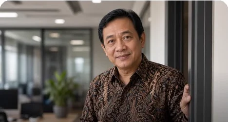
Rekonsiliasi bank: kandidat Agentic AI.
Petakan proses finance mana yang bisa dijalankan AI di perusahaan Anda.
Dalam satu hari on-site, tim MAXY bantu memetakan proses tim finance Anda, mengidentifikasi mana yang cocok diautomasi, dibantu AI, atau tetap manual.
Berkolaborasi bersama 100+ perusahaan, kampus, dan institusi
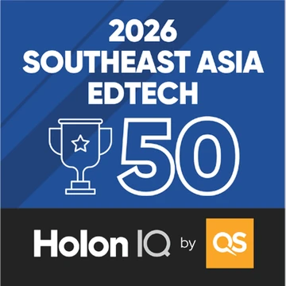
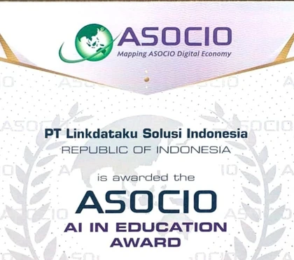
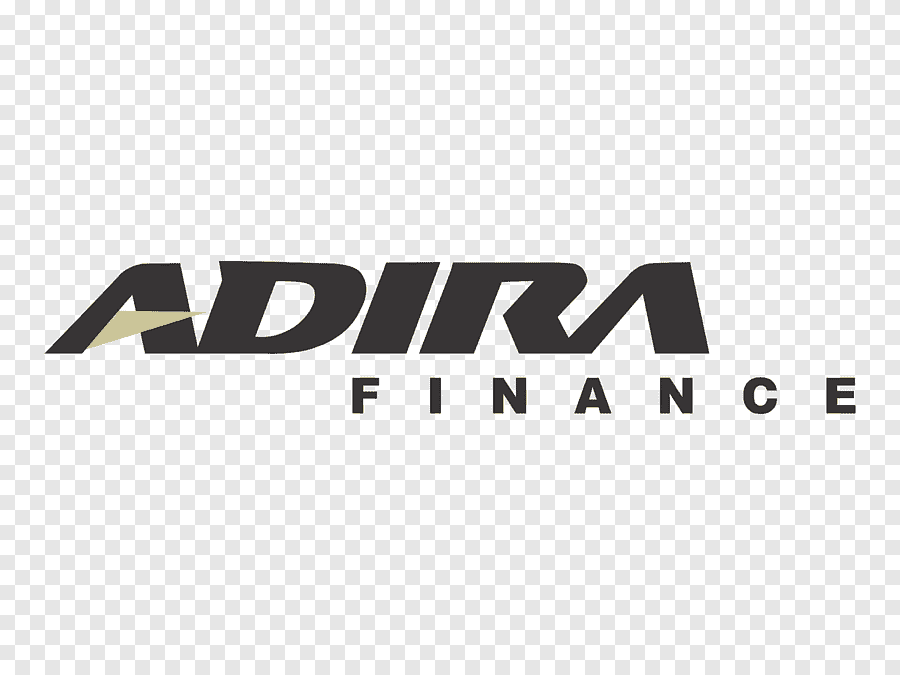
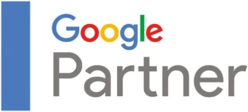
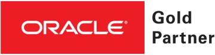
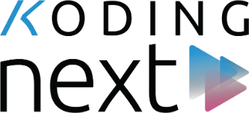
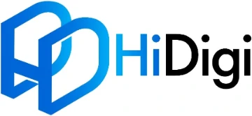
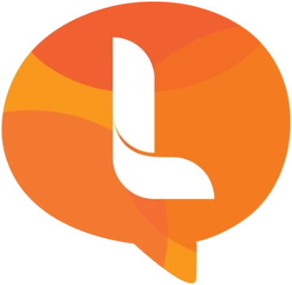
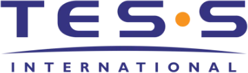
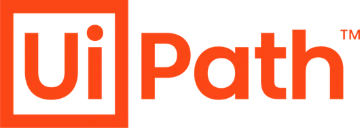
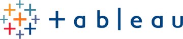
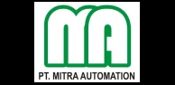
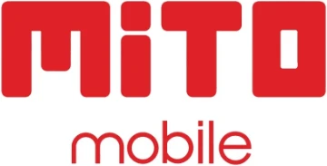
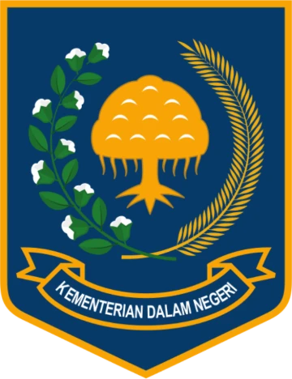

Rekonsiliasi bank: kandidat Agentic AI.
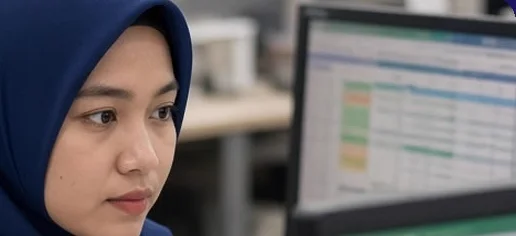
Tiap closing: unduh, salin, cocokkan. Waktu habis sebelum sempat analisis.
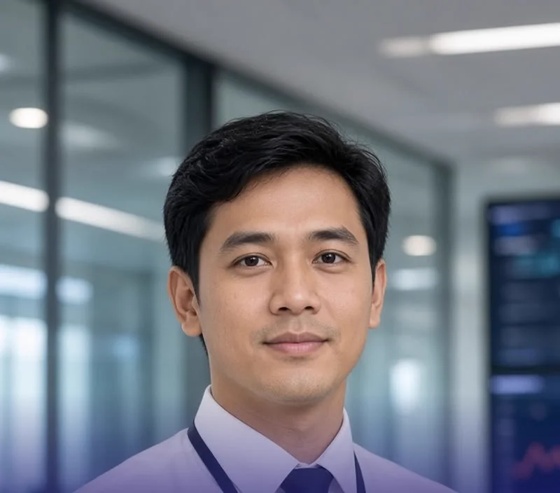
Reminder, follow-up WA & email, update status piutang: manual.
Cash flow ikut menunggu.
Tanpa diagnosis yang tepat, adopsi AI hanya buang waktu dan anggaran. Dengan konsultasi, kami identifikasi prosesnya, susun prioritasnya, dan menentukan langkah pertama Anda.
Tugas repetitif yang dapat dikerjakan AI dari awal sampai selesai.
AI bantu prosesnya, Anda yang memutuskan.
Manusia bertanggung jawab penuh atas seluruh keputusan.
“Ikut pelatihan AI di MAXY Academy, semuanya berjalan lancar dan sesuai ekspektasi aku dari awal. Aku jadi lebih ngerti cara pakai AI dengan lebih efisien untuk kerjaan sehari-hari. Tool yang paling berkesan buat aku itu AI Agent karena bisa connect langsung ke Excel, padahal kerjaan aku memang banyak olah data sampai ratusan ribu bahkan jutaan baris, jadi sangat membantu banget. Pelatihnya juga sudah sesuai ekspektasi, semua materi tersampaikan dengan baik dan langsung bisa dipraktikkan.”
“Awalnya kami belum tahu gimana AI bisa berfungsi dengan baik untuk membantu pekerjaan, tapi setelah ikut training hari ini, ternyata sangat membantu terutama buat kami yang banyak mengolah data dan menyampaikan informasi secara lebih interaktif. Meskipun saya tidak punya background IT sama sekali. Dan justru menurut saya, training ini sangat cocok buat orang yang membutuhkan hal-hal baru prosesnya cepat, materinya jelas, dan amat sangat bisa dimengerti oleh siapa pun. Ini jadi salah satu alternatif yang akan kami pertimbangkan untuk diimplementasikan di departemen kami.”
“Setelah ikut pelatihan di MAXY Academy, aku jadi tahu step-by-step yang benar yang terarah sampai cara evaluasi konten yang langsung bikin aku sadar kekurangan konten di Yayasan Gorontalo Baik selama ini. Trainer nya ngebantu banget! Trainernya jelas dan mau ngulang kalau ada yang ketinggalan.”
“Aku udah pakai banyak tools AI sendiri tapi tetap trial and error karena enggak tahu cara pakainya yang benar. Setelah ikut program MAXY, aku baru sadar betapa luasnya manfaat AI ternyata bisa jadi asisten pribadi lengkap dari bikin content plan, susun jadwal, sampai connect ke Excel dan Canva. Ekspektasi aku awalnya cuma mau belajar bikin karakter AI visual, tapi yang aku dapat jauh lebih dari itu. MAXY benar-benar mengubah cara pandang aku soal AI.”
“Sangat challenging tapi worth it banget. Kami belajar mengintegrasikan berbagai platform menjadi satu workflow utuh, termasuk bikin chatbot yang langsung bisa diimplementasikan untuk bisnis retail. Yang bikin pelatihan ini beda, trainernya enggak cuma jelasin teori tapi troubleshooting pun dibantu sampai selesai, dan semua materi disampaikan dengan sangat intens, detail, tapi tetap gampang dimengerti. Bisa diimplementasikan bareng di kantor.”
“Meskipun saya tidak punya background IT, belajar AI di MAXY sama sekali tidak sulit. Trainingnya sangat mudah dipahami dan interaktif. Saya mendapat banyak pengetahuan baru, terutama tentang tools-tools AI yang sebelumnya belum pernah saya gunakan, lengkap dengan cara penggunaannya secara detail. Yang akan langsung saya aplikasikan di PT Adira Dinamika Multifinance. Rating saya 9 dari 10 saya sangat puas dengan pelatihan ini.”
“Saya ikut pelatihan ini karena sadar perkembangan AI sangat masif kalau kita baru belajar hari ini, bulan depan bisa ketinggalan. Sebagai profesional, kita tidak mau kalah sama AI, kita harus bisa memaksimalkannya. Yang menarik, MAXY mengajarkan AI bukan sekadar soal tools, tapi dikaitkan dengan happiness at work dan ternyata nyambung banget. Ketika kita bisa menyederhanakan pekerjaan yang repetitif dengan AI, kita jadi punya lebih banyak ruang untuk fokus pada hal-hal yang benar-benar bermakna dalam pekerjaan.”
“Setelah ikut kelas di MAXY, AI udah jadi bagian dari hidup aku dan bantu gampangin segala pekerjaan. Aku jadi tahu cara bikin prompt yang bagus, dan yang tadinya butuh berhari-hari, sekarang bisa selesai dalam beberapa jam aja. Yang paling berkesan, setelah ikut kelas ini aku justru makin penasaran dan makin mau belajar lebih dalam karena aku sadar masih banyak banget yang bisa dieksplorasi dari AI ini.”
“Di MAXY Academy, materinya jauh lebih teknis dan detail: saya jadi tahu AI agent itu bisa digunakan untuk apa saja dan bagaimana tahapan penggunaannya secara konkret, terutama untuk diimplementasikan di level korporasi. Semua pertanyaan saya yang berkaitan dengan teknis terjawab di sini. Sesuatu yang tidak saya dapatkan dari training sebelumnya.”
“Jujur, saya kaget ternyata AI sepenting dan seberguna itu! Sebelumnya saya hanya pakai AI sangat sedikit, penggunaannya sangat terbatas. Pikiran saya benar-benar terbuka tentang betapa pentingnya AI di zaman sekarang, dalam hal apapun bisa dipakai dan sangat membantu untuk efisiensi waktu dan tenaga. Ini sangat relevan dan langsung bisa saya terapkan di Study Center.”
“Bukan sekadar teorinya, tapi bagaimana benar-benar mengimplementasikannya di perusahaan untuk meningkatkan kualitas orang-orang di dalamnya. Teorinya sebenarnya sudah lama ada, tapi implikasinya di perusahaan kami belum terlihat nyata dan itulah yang ingin kami ubah setelah program ini!”
“Relevan banget untuk perusahaan modern seperti Ciputra karena tantangannya bukan cuma soal produktivitas, tapi bagaimana AI bisa berdampak pada human capital kita tanpa mengesampingkan kebahagiaan karyawan di tempat kerja. Trainer sangat fun dalam membawakan materi, tidak terasa boring sama sekali, transisi antar modulnya smooth dan semuanya nyambung. Hari ini saya dapat filosofinya, dan besok saya sudah tidak sabar untuk langsung implementasi AI-nya!”
“Sebagai HR di PT Indo Cyber Global Technology, saya ikut program di MAXY karena memang dibutuhkan untuk menjawab problem-problem yang ada di pekerjaan dan AI ternyata jadi salah satu solusinya. Yang paling relevan buat saya adalah strategi komunikasi internal HR dan antar karyawan, terutama karena tim kami tidak berada di satu lokasi. Hal baru yang saya dapatkan hari ini adalah solusi-solusi digital yang ternyata tidak susah untuk diterapkan. Dan ternyata produktif dan happy di tempat kerja itu bisa berjalan beriringan dan AI jadi jembatannya.”
“Hal baru yang paling berkesan buat saya adalah menyadari bahwa AI ternyata sangat mudah dipelajari oleh semua kalangan. Tidak serumit yang dibayangkan. Strategi yang paling ingin saya aplikasikan di PT Dharma Satya Nusantara adalah cara melakukan analisis secara terstruktur menggunakan AI.”
“Training hari ini seru banget. Saya dapat banyak ilmu baru yang selama ini enggak saya tahu. Ternyata AI itu ilmunya banyak banget, jauh lebih dari yang saya kira selama ini. Harapannya ilmu ini bisa langsung kepakai dan saya bisa lebih mengoptimalkan support dari AI untuk membantu kerjaan sehari-hari.”
“Terima kasih MAXY untuk training yang benar-benar fruitful dan luar biasa! Kami mendapat begitu banyak insight dan pengetahuan baru karena teknologi AI memang sangat dibutuhkan saat ini.”
“Training ini membuka perspektif saya tentang pentingnya happiness & productivity dalam sebuah perusahaan dan kehidupan sehari-hari. Jadi sadar bahwa perusahaan bukan hanya target besar, tetapi juga perlu karyawan di dalamnya bisa merasa happiness agar dapat memberikan impact yang lebih baik untuk perusahaan.”
“Sebagai brand activation di Mito, aku sudah cukup familiar dengan tools AI. Tapi yang aku dapat di MAXY benar-benar membawa aku ke level berikutnya. Materi prompting-nya sangat membantu banget, karena di dunia kreatif kita sering butuh ide-ide segar yang belum kepikiran, dan dengan prompting yang benar hasilnya jadi jauh lebih maksimal. Semuanya makin jelas dan sangat berguna khususnya untuk para pekerja di industri seperti kami.”
Harga belum termasuk PPN. Biaya perjalanan di luar Jabodetabek dan Surabaya mengikuti biaya aktual.
Kami merespons dalam 1 hari kerja.
Pelatihan membekali tim dengan keterampilan. Assessment adalah diagnosis: kami memetakan proses bisnis Anda dan merekomendasikan di mana AI layak diterapkan. Banyak perusahaan memulai dari assessment, lalu melanjutkan ke pelatihan yang tepat sasaran.
Tidak. Assessment memetakan proses mana yang bisa dijalankan AI, mana yang dibantu AI, dan mana yang tetap manual. Keputusan dan approval tetap di tim Anda.
Aman. Kami bersedia menandatangani NDA sebelum assessment. Kami tidak membutuhkan akses langsung ke sistem produksi. Cukup penjelasan alur, contoh dokumen yang sudah disamarkan, dan data volume serta waktu kerja.
Umumnya Operasional, Finance, HR/HC, Sales & Customer Service, Marketing, dan Procurement. Divisi prioritas kita sepakati saat discovery call.
Bisa. Tim kami berbasis di Jakarta dan Surabaya, jadi untuk area Jabodetabek dan Surabaya tidak ada biaya perjalanan tambahan. Untuk kota lain, biaya perjalanan konsultan dibebankan sesuai aktual.